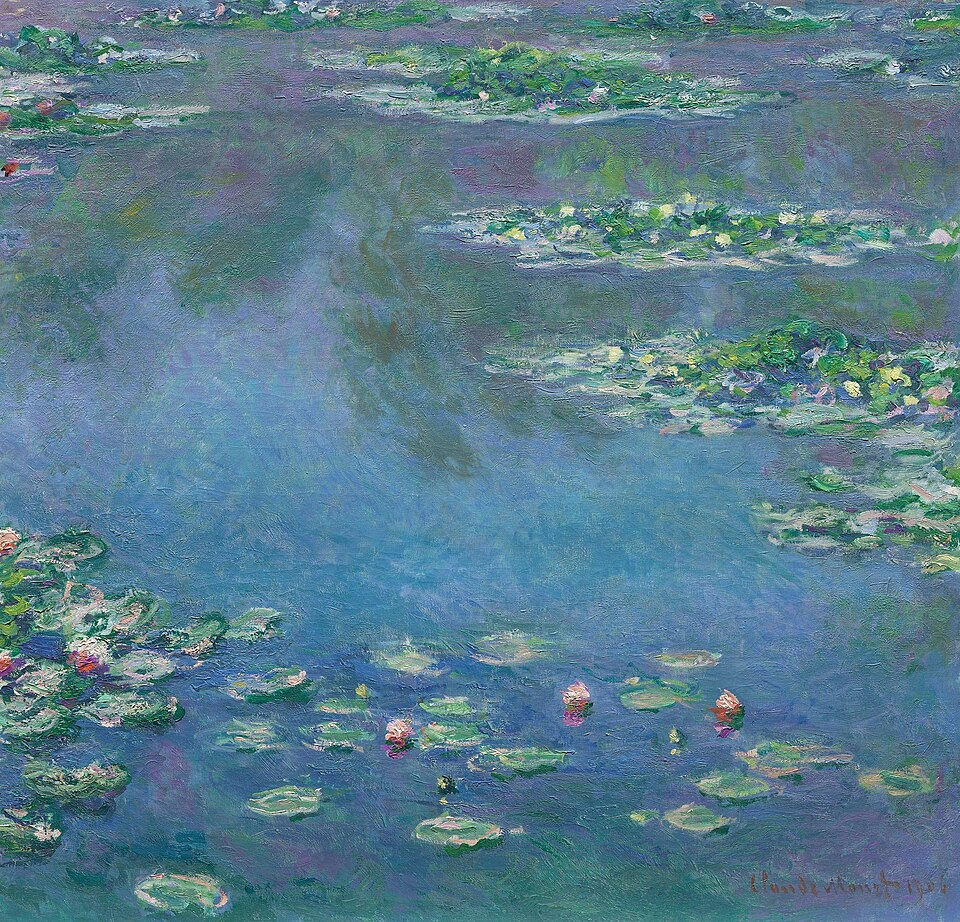
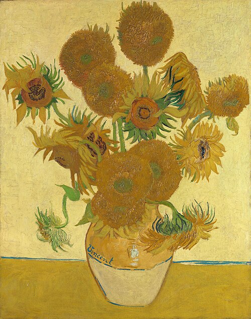

Scientific Communication: Research Posters & Overleaf
Research Methods Workshop · VT-DSPG 2026
2026-07-16
Today’s Agenda
PART I · 10:00–10:50 Research Communication & Poster Design
- Why Communication Matters
- Designing an Academic Poster
- Communication Exercise
BREAK 10:50–11:00
PART II · 11:00–12:00 Overleaf for Academic Writing
- Create Overleaf project
- Build research paper template
- Equations · tables · figures · references
- Build poster template
- Connect GitHub + Zotero
- Final practice
By the end: communicate research to different audiences, design an effective poster, and build a paper + poster in Overleaf linked to GitHub and Zotero.
Part I · Research Communication & Poster Design
10:00–10:50 · communication · poster design · hands-on exercise
Why Communication Matters
The same finding needs a different framing depending on who is listening.
| Researchers | Stakeholders | General Public | Policymakers | |
|---|---|---|---|---|
| Goal | Scientific contribution | Decision support | Understand the story | Actionable findings |
| Emphasize | Methods, robustness, identification | Policy implications, cost-benefit | Plain language, relatable impact | Evidence and recommendations |
| Avoid | Undefined jargon | Excessive statistical detail | Technical notation | Abstract theory |
| Example | “DiD with event study confirms parallel trends” | “Policy reduced crashes by 15% in treated cities” | “Safer streets: what CA’s new law did” | “Evidence supports statewide adoption” |
Key insight: Your finding does not change — your framing, language, and emphasis do.
What Is an Academic Poster For?
The Purpose
A poster is a conversation starter, not a paper on a wall.
- People decide in 5 seconds whether to stop
- If they stop, you give a 2-minute verbal pitch, then answer questions
- The poster supports your talk — it does not replace it
The Goal
“Convey one clear finding to a non-specialist in 2 minutes.”
- Title = the finding (not the topic)
- Visuals = the evidence
- Text = the minimum context needed
Your Poster: VT Symposium, Week 10
Event: VT-DSPG Summer Symposium, late July 2026
Audience: Faculty, policy partners (Cal Walks, Kohl Centre), fellow students, VT administrators
One clear, policy-relevant finding from your DSPG project — stated in plain language, supported by one strong figure.
Poster Structure
Standard Sections
Header Title · Authors · Institution · Logos
Motivation Why does this matter? (2–3 sentences + 1 stat)
Research Q One clear sentence
Data What did you use? (brief, visual if possible)
Methods Design + key model (diagram or equation)
Results THE MAIN FINDING — biggest, clearest visual
Conclusion Policy implication + 1 limitation + next steps
Space Allocation · 40” × 32” landscape
TITLE + AFFILIATIONS + LOGOS (10%)
Motivation
Research Q
(15%)
MAIN RESULT
(40%)
Data &
Methods (15%)
Conclusion
(10%)
References + QR code (10%)
Poster Requirements & Template
Size: 40” wide × 32” tall · landscape · printed by VT 📄 Open Poster Example ↗
Data Science for the Public Good
PROJECT TITLE
Include your research content here
ACKNOWLEDGMENT: DATA-ACRE · Grant no. 2022-67037-36639 · USDA NIFA
What to Include
Logo KohlCentre_Vertical_FullColor_RGB.jpg — top-left corner
Ack. This work is supported by the Data Analytics in Agriculture, Community, and Rural Economics (DATA-ACRE) program, grant no. 2022-67037-36639 / project accession no. 2021-10424, from the U.S. Department of Agriculture, National Institute of Food and Agriculture. Any opinions, findings, conclusions, or recommendations expressed in this publication are those of the author(s) and should not be construed to represent any official USDA or U.S. Government determination or policy.
Design Principles
One Main Figure Your best result gets 40% of the space. Large, clear, self-explanatory caption. Don’t hide it behind text.
Minimum Text No paragraph blocks. Bullet points only. Body text readable from 1.5 m. Target ≤ 300 words (excluding captions).
Color with Purpose Pick one primary and one accent color for structure. Use color in charts to highlight the main finding — not for decoration.
Visual Hierarchy Title (48pt+) → Section headers (28pt) → Body (20–24pt). Eye flows naturally: title → main result → conclusion.
✅ White background · generous margins · aligned grid · large captions · QR code to report
❌ Dense text blocks · tiny figures · 5+ colors · equations without explanation · dark backgrounds
Color in Your Poster
Harmonious palettes strengthen your visual argument · 3–5 colors · one accent · consistent throughout
Learning from Art ✅ — Monet · Water Lilies (1906)

Why it works for data
Muted blues and greens — calm tonal unity with no single dominant color competing for attention.
Monet Pond palette — line charts, time series, academic figures
✅ 3–5 harmonious colors that guide the eye without competing
Learning from Art ✅ — Van Gogh · Sunflowers (1888)

Why it works for data
Bold contrast: gold against deep blue, with earthy amber accents — high-impact without visual chaos.
Van Gogh Sunflower palette — bar charts, dashboards, presentations
✅ Strong contrast pairs (gold + blue) with a neutral buffer create structure
Learning from Art ❌ — Too Many Colors
Matisse · La femme au chapeau (1905)
15+ competing colors — brilliant as art, chaos as data. Every color fights for attention equally.
❌ No hierarchy — viewers can’t tell which color encodes meaning
Rule: Art maximizes sensation. Data minimizes cognitive load. Never exceed 5 colors.
Color Design Principles — Part 1
Good color design is about communicating information clearly, not making charts more colorful.
1 · Visual Hierarchy
Assign colors distinct roles:
- Primary — overall style, main information
- Secondary — distinguish categories
- Accent — highlight the most important point only
If every color is equally bright, nothing stands out.
2 · Keep Colors Consistent
Assign the same color to the same category throughout all figures in a report.
Example:
- Treatment group → Orange
- Control group → Blue
Readers don’t need to relearn the legend on every figure.
3 · Ensure Sufficient Contrast
Colors should improve readability, not just aesthetics:
- Data stand out from the background
- Text, axes, and legends remain readable
- Figures stay clear when projected, printed, or on mobile
Good contrast improves accessibility and comprehension.
Color Design Principles — Part 2
4 · Less Is More
Use 4–6 core colors for most charts.
If you have many categories:
- Facet into small multiples
- Group similar categories
- Highlight key groups; gray out the rest
A simpler palette usually communicates more effectively.
5 · Design for Accessibility
Avoid red–green combinations. Prefer:
- Blue–Orange · Blue–Gray · Purple–Green
Also use multiple visual encodings:
- Different line types
- Point shapes
- Direct labels
Accessible to readers with color vision deficiencies.
6 · Let the Background Recede
Background should support data, not compete with it.
✅ White · Off-white · Light gray
❌ Busy textures · Strong gradients · Decorative backgrounds
The cleaner the background, the easier readers focus on the data.
The Rule + Common Mistakes
Common Coloring Mistakes
❌ Too many highly saturated colors — obscures the main message
❌ Insufficient contrast — lines and text blend into the background
❌ Red–green combinations — not colorblind-friendly
❌ Distracting backgrounds — draw attention away from the data
The One Rule to Remember
“Good color design is not about using more colors — it is about making information clearer.”
Practical guide:
1 primary · 1–3 secondary · 0–2 accent
Limit to 4–6 colors total · consistent across all figures · strong contrast · colorblind-friendly combinations · neutral background
What Is a Color Palette?
Definition
A color palette is a named collection of hex colors used consistently across all figures in a project.
Why? All charts in your report feel like they belong together
Why? Your audience quickly learns which color represents which group
Why? Define once — reuse across every figure without choosing again
Why? Consistent colors strengthen your project’s visual identity
Four Themes for Research Visualization
Monet Pond
Line charts · time series · academic publications
Van Gogh Sunflowers
Bar charts · dashboards · presentations
Academic Deep Blue
Scatter plots · regression figures · journal papers
Natural Muted
Area charts · policy reports · executive dashboards
All four themes are defined in Theme.R. Open the file — copy the palette you need, paste into your analysis script.
Step 1 — Define the Palette
Store each palette as a named vector of hex colors. No special packages needed — just base R.
Tip: Add these definitions at the top of your analysis script. Everything below can reference monet, sunflower, academic, or natural directly.
Step 2 — Visualize the Palette
See the colors before using them
This produces a grid of color swatches with hex labels — exactly what you saw on the previous slides, but generated by R in your own session.
Workshop habit: Always show the palette first. Participants see the colors and pick their theme before opening ggplot2.
Step 3 — Apply to Charts
Bar chart — Sunflower palette
Line chart — Monet palette
The pattern never changes: choose the palette → add scale_fill_manual() or scale_color_manual() → done.
Expand Your Palette
When 5 colors are not enough
If your data has more categories than palette colors, interpolate with colorRampPalette():
How it works
colorRampPalette(palette)(n) interpolates between your base colors to produce n colors.
→ Tonal quality of the original palette is preserved
→ All new colors stay in the same family
→ Works with any of the four themes
Rule: If you need more than 7–8 colors, consider faceting or a different chart type.
Communication Exercise
Activity · ~20 min 📄 Open Worksheet
Step 1 Write a one-paragraph summary of your project — what you did, what you found, why it matters. (5 min)
Step 2 Rewrite for each audience on the worksheet — same finding, different language: researcher · stakeholder · policy maker · general public. (10 min)
Step 3 Read out — one version per group. Class listens for what changed. (5 min)
Audience Guide
🔬 Researcher — methods, data sources, statistical approach, limitations
🤝 Stakeholder — practical impact, what changes, what they should know
📋 Policy Maker — recommendation, scale, cost-benefit, urgency
🌎 General Public — plain language, relatable story, why it matters to them
The finding is constant. The translation is the skill.
→ Which words changed across versions?
→ Which details were removed for each audience?
→ What stayed the same regardless of audience?
Creating a Poster in PowerPoint
① Set Slide Size Design → Slide Size → Custom Size Width 40 in · Height 32 in → OK
② Open Template Open poster_template.pptx Header · logo · names · Ack. already placed
③ Choose Colors Format → Shape Fill → More Colors Enter Hex code → OK
④ Add Content Insert text boxes per section Figures from R: 300 DPI PNG or PDF
⑤ Export PDF File → Save As → PDF Submit for print
✅ Do Use Align & Distribute (Format → Align) · Group before moving (right-click → Group) · Embed fonts (File → Options → Save) · Export figures as PDF or 300+ DPI PNG
❌ Avoid Low-resolution screenshots as figures · Resizing images by dragging corners (use Format → Size) · Dark backgrounds · More than 3–4 colors
PowerPoint is great for rapid iteration. Use Overleaf when you need precise control over layout and typography.
Break · 10 min
10:50 – 11:00
Back at 11:00 for Overleaf
Part II · Overleaf for Academic Writing
11:00–12:00 · paper template · equations · tables · figures · poster · GitHub · Zotero
From this point onward — close the slides and work entirely in Overleaf.
Create a New Overleaf Project
Getting Started · 5 min
Step 1 Register at overleaf.com with your VT email — free institutional license
Step 2 New Project → Blank Project → name it DSPG2026-Research
Step 3 Interface tour: file tree · editor · PDF preview · menu
Step 4 Set compiler: Menu → Compiler → XeLaTeX
Overleaf is a cloud-based LaTeX editor — write in the browser, get PDF in real time. No installation needed. VT provides free institutional access.
Interface Overview
📁 File Tree (left) — .tex files, .bib, images. Main file is main.tex.
✏️ Editor (center) — Write LaTeX. Autocomplete, error markers. Ctrl+Enter to compile.
📄 PDF Preview (right) — Live output. Click to jump to matching editor location (SyncTeX).
⚙️ Menu (top left) — Compiler settings, GitHub sync, download ZIP, share, version history.
Action: Open Overleaf → New Project → Blank Project. Name it DSPG2026-Research. We’ll write together.
Connect Overleaf with GitHub
Why link? · 5 min
- R code on GitHub, paper + poster on Overleaf
- Syncing lets you push figures and tables from R directly into your paper
- Full version history — always revertible
- One source of truth — no more
final_v3_ACTUAL_FINAL.pdf
Step 1 In Overleaf: Menu → GitHub → Link to GitHub account
Step 2 Create Overleaf project from a GitHub repo (or link existing)
Step 3 Push/pull between Overleaf and GitHub as needed
Step 4 In R: write outputs to figures/ and tables/ — the folders Overleaf reads
Project structure
DSPG2026-Research/
│
├── Paper/
│ ├── main.tex
│ ├── references.bib
│ ├── figures/ ← from R
│ └── tables/ ← from R
│
└── Poster/
├── poster.tex
└── figures/ ← same outputsRe-run analysis in R → push to GitHub → Overleaf pulls updates automatically into both paper and poster.
Connect Overleaf with Zotero
Setup · 5 min
Step 1 Install Zotero (zotero.org) + Better BibTeX plugin
Step 2 Add papers to your library (drag PDF or use the browser connector)
Step 3 Right-click your collection → Export Library → Better BibTeX → Keep updated
Step 4 Upload the exported .bib to Overleaf’s file tree
Step 5 In main.tex: \bibliography{zotero_export} — cite with \cite{AuthorYear}
Why Zotero + Better BibTeX?
🔑 Consistent keys — auto-assigns Ang2024 style keys that never change
📥 No manual entry — add a DOI or PDF; Zotero fills in all metadata
🔄 Re-export anytime — add new papers, re-upload the .bib
👥 Shared library — whole team uses the same Zotero group → identical keys
No more manual bibliography. No more mismatched citation formats across team members.
Let’s Explore Overleaf Together
Follow along — open overleaf.com in your browser
📁
Project setup
create & name
✏️
Preamble
packages & title
📐
Equations
tables · figures
🔖
Citations
.bib + \cite{}
🗺️
Poster
beamerposter
The next slides walk through each step — follow along or just watch
Academic Paper · Workflow Overview
Before we start — upload the paper template to Overleaf
① Overleaf → New Project → Upload Project → select overleaf_paper.zip ② Menu → Compiler → pdfLaTeX · Menu → Bibliography → Biber ③ Compile — orange [placeholders] appear throughout
① Preamble
Packages · compiler
author · title
② Document Body
Sections · structure
\input{} files
③ Equation
Type your model
in narrative.tex
④ Tables
Summary stats
regression results
⑤ Map Figure
Run make_map.R
upload · uncomment
⑥ References
Add .bib entries
\parencite{key}
Files in the zip: main.tex · narrative.tex · table.tex · reference.tex · references.bib · figures/make_map.R
Find tasks fast: Ctrl+F → \FILL → jump to every orange placeholder. Replace each one. When no orange remains — you’re done.
Build a Research Paper Template — Preamble
Preamble: packages, title, author
\documentclass[12pt]{article}
% Core packages
\usepackage{amsmath} % math environments
\usepackage{graphicx} % include figures
\usepackage{natbib} % author-year citations
\usepackage{booktabs} % professional tables
\usepackage{hyperref} % clickable links in PDF
% Paper metadata
\title{Your Research Title}
\author{Your Name \\ Virginia Tech}
\date{\today}What each command does
| Command | Purpose |
|---|---|
\documentclass[12pt]{article} |
Document type; 12pt base font |
\usepackage{amsmath} |
Equation environments |
\usepackage{natbib} |
\cite{}, author-year bibliography |
\usepackage{booktabs} |
Professional table rules |
\usepackage{hyperref} |
Clickable cross-refs and URLs |
\title{} |
Paper title |
\author{} |
Author and affiliation |
The preamble goes before \begin{document}. Think of it as the settings file for your paper.
Build a Research Paper Template — Document Body
Document body: structure and sections
\begin{document}
\maketitle
\begin{abstract}
One paragraph: motivation, method,
and main finding.
\end{abstract}
\section{Introduction}
\section{Literature Review}
\section{Data}
\section{Methods}
\section{Results}
\section{Discussion}
\section{Conclusion}
\bibliography{references}
\bibliographystyle{apalike}
\end{document}What each part does
| Part | Purpose |
|---|---|
\begin{document} |
Content starts here |
\maketitle |
Renders title, author, date |
\begin{abstract} |
Summary before introduction |
\section{} |
Numbered heading |
\bibliography{references} |
Insert reference list from .bib |
\bibliographystyle{apalike} |
Citation format (author-year) |
\end{document} |
Content ends here |
Action: Create main.tex. Add each \section{}. Compile after every addition — catch errors early.
Show Each Component — Equations
The model — type this in narrative.tex
\[Y_i = \beta_0 + \beta_1 X_{1i} + \beta_2 X_{2i} + \cdots + \varepsilon_i\]
Type it in Overleaf:
Overleaf tip: type \beta then press Tab — Overleaf autocompletes Greek letters and commands. Try \varepsilon, \hat{}, \bar{}.
In narrative.tex, find \FILL{Y_i = \beta_0 ...} inside \begin{equation} and replace it with your model.
Key symbols
| LaTeX | Output | LaTeX | Output |
|---|---|---|---|
\beta |
β | \alpha |
α |
\varepsilon |
ε | \gamma |
γ |
\hat{\beta} |
β̂ | \bar{Y} |
Ȳ |
\text{Name}_i |
Name_i | \frac{a}{b} |
a/b |
X_{1i} |
X₁ᵢ | \sigma^2 |
σ² |
\sum_{i=1}^n |
Σ | \times |
× |
Cross-reference: Equation~\eqref{eq:model} → renders as “Equation (1)” — always use \eqref, not \ref.
Your turn: Open narrative.tex → find the \begin{equation} block → replace \FILL{...} with your model → compile to see it rendered.
Tables — Generating from R
Generate, include, and reference
Best practices
✅ Create a tables/ folder in Overleaf — upload .tex files from R
✅ Every table must have \caption{} and \label{tab:...}
✅ Reference with Table~\ref{tab:...} — number updates automatically
✅ Re-run R → re-upload .tex → table in paper updates
❌ Never manually type a regression table
stargazer also supports type = "html" and type = "text" for checking output before importing to LaTeX.
Tables — Manual Format with booktabs
Manual table skeleton
booktabs rules and alignment
\toprule — thick rule at the top
\midrule — thin rule separating header from data
\bottomrule — thick rule at the bottom
[htbp] — placement: here / top / bottom / page
{lcc} — column alignment: left, center, center
Never use \hline — visually heavy and non-standard. Use booktabs only. Use {p{4cm}cc} to set a fixed width for the first column when text wraps.
Figures — LaTeX Syntax
Single figure
Reference: Figure~\ref{fig:event}
Width options and tips
| Option | Effect |
|---|---|
width=0.9\textwidth |
90% of text column width |
height=8cm |
Fixed height (aspect auto-adjusts) |
scale=0.7 |
Scale uniformly |
✅ Upload figure files to figures/ in Overleaf’s file tree
✅ Write captions that are self-contained — readable without the body text
✅ Use \hfill between two minipage environments for side-by-side figures
❌ Do not use screenshots or low-resolution images
The same figures/ folder serves both your paper and your poster — output once, use everywhere.
Figures — Generate Your Map from R
figures/make_map.R is already in your template
# ── CHANGE ONLY THESE LINES ──────────────────────
DATA_FILE <- "your_data.csv" # your data file
FIPS_COL <- "fips" # FIPS column name
OUTCOME_COL <- "outcome" # variable to map
MAP_TITLE <- "Your Map Title"
LEGEND_LABEL <- "Your Variable"
STATE <- "VA"
# ─────────────────────────────────────────────────
# The script handles everything else:
# loads county shapefile, merges your data,
# draws the choropleth, saves map.png at 300 DPIStep 1 Edit the 6 lines above · run make_map.R in R
Step 2 Upload map.png to the figures/ folder in Overleaf
Step 3 In main.tex: comment out \fbox block · uncomment \includegraphics{figures/map.png}
Format guide
| Format | When |
|---|---|
| PNG 300 DPI | Maps, raster outputs ✅ |
| PDF (vector) | ggplot charts, bar/line ✅ |
| JPEG | Avoid — lossy compression ❌ |
\includegraphics in main.tex
Same figures/ folder works for both your paper and poster — generate once, use in both.
Show Each Component — References
Create references.bib
Cite and compile
Common bibliography styles
| Style | Format |
|---|---|
apalike |
Author-year (APA-like) |
plain |
Numbered references |
chicago |
Chicago author-date |
jpe |
Journal of Political Economy |
✅ Upload references.bib to the Overleaf file tree
✅ Compile twice after adding new citations (BibTeX runs on first pass)
❌ Never type citations manually in the text
Next: replace this manual .bib with a Zotero export — no more manual bibliography entry.
Build a Poster in Overleaf — Using the Template
Getting started · 5 min
Step 1 New Project in Overleaf → Upload Project → upload the overleaf_poster.zip file
Step 2 Menu → Compiler → pdfLaTeX, then Menu → Bibliography → Biber
Step 3 Press Compile — the poster renders with orange [placeholder] text throughout
Step 4 Find every \FILL{...} in poster.tex and replace with your content
Step 5 Upload your map / figure to figures/, uncomment \includegraphics, write the caption
The \FILL{} command prints in orange — easy to spot. Every orange word is a placeholder. When you are done, no orange should remain.
Already in the template ✓
✅ Kohl Centre logo (top-left)
✅ Data Science for the Public Good header
✅ VT maroon & orange color scheme
✅ Section blocks: Motivation · Research Question · Data · Methods · Key Finding · Summary Statistics · Conclusion · References
✅ Summary statistics table skeleton
✅ Methods equation skeleton
✅ Gray figure placeholder box
✅ Verbatim DATA-ACRE acknowledgement footer
You fill in: project title · team names · section text · figure · table values
Customize Your Poster Colors
How to change colors in poster.tex
Find the %%% COLOR lines near the top of poster.tex and change the hex codes:
Then compile — the whole poster updates instantly.
You only need to change 3 hex codes to give your poster a completely different look. No other edits needed.
Color palette options
VT Maroon & Orange (default) — 861F41 · E5751F · F4F4F4
Navy & Gold — 1B2A4A · C9A84C · EEF0F5
Forest & Amber — 2D4A22 · C87941 · F0F4EE
Slate & Coral — 3A4F6B · D05A4D · F0F2F5
Plum & Sage — 4A2060 · A0C878 · F5F0FA
Adjust Layout · Key Commands
Column widths
Text & font size in a block
Add or remove a block
Vertical spacing
Overall poster scale
Poster Practice · Build Your Poster Now
Open poster.tex in Overleaf — replace every orange \FILL{} with your research content
① Fill the header
Replace \FILL{Your Project Title Here}
Replace all team name placeholders
Compile to confirm
② Fill each section
Motivation · Research Question
Data · Methods · Key Finding
Summary Statistics · Conclusion
③ Fill the Summary Statistics table
Replace \FILL{Variable 1} etc.
Enter your Mean and SD values
Update caption with sample size N
④ Add your map
Upload PNG/PDF to figures/
Uncomment \includegraphics
Delete gray placeholder box
Write the caption
Compile after each change · No orange text left = done · Red error? Ask for help
Poster Practice — Checklist
Check off each item as you complete it. Help a teammate if you finish early.
☐ Overleaf account created with VT email
☐ poster.tex opens and compiles to PDF
☐ Logo file uploaded to figures/
☐ Project title filled in
☐ Team member names and roles filled in
☐ Motivation block written (2–3 sentences + statistic)
☐ Research Question block written (1 sentence)
☐ Data block written (2–3 bullet sources)
☐ Methods block written (approach + equation)
☐ Key Finding block written (bold the key number)
☐ Conclusion block written (finding + policy)
☐ Results added (figure + table)
☐ Map uploaded and \includegraphics uncommented
Key Takeaways
☁️ LaTeX + Overleaf Free VT institutional license. Write in the browser, get PDF in real time — no installation needed. Build your paper and poster in one project, sharing the same figures, tables, and .bib file.
🖼️ Poster = conversation One main figure, minimum text, title states the finding. Designed for a 2-minute pitch — not for reading. Design for the stakeholder; annotate for the researcher.
🔗 Reproducible workflow R generates figures and tables → Overleaf imports them → GitHub versions everything → Zotero handles the bibliography. No manual copying, no mismatched files, no lost work.
Now go create, artists! 🎨

Communication & Poster Workshop · VT-DSPG 2026 · 10:00 AM–12:00 PM